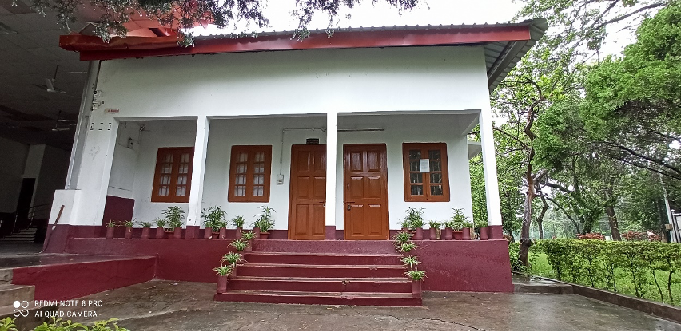
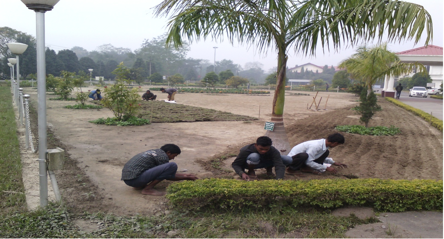
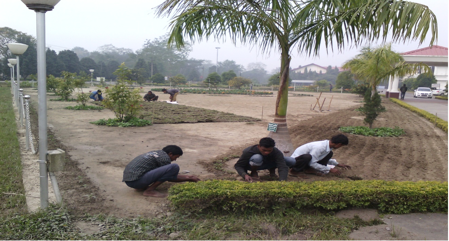

About Us

The section is involved in following activities
The University boasts of a lush green campus despite considerable construction activities, due to the consistent efforts of Horticulture Section.
Infrastructural facilities
The office building of Horticulture Section is adjacent to Community hall.
Horticultural machineries:
Tractor along with accessories, Ride on Lawn Mower, Lawn Mower, Wheeled String Trimmer, Brush Cutter, Chain Saw Machine etc.
Equipment:
Hedge Shear, Pruning Secateurs, Pruning-budding-grafting Knife, Thinning Scissor, Spade, Garden Rake, Belcha, Dao, Khurpi, Saw, Axe, Sprayer etc.


Plantation Drives
Massive plantations and different landscaping/beautification activities have already been carried out in different parts of the University campus.
Landscaping and gardening activities
In addition to carry out different plantation programs, efforts were also made by the Horticulture Section, Tezpur University for beautification of different parts of the University campus by development of flower gardens and other landscaping activities such as development of lawns, hedge, ornamental and avenue plantations etc.
 

Moreover, plantation of different types of Orchid on the existing trees of different locations of University campus has also been done for further beautification of the landscape.
Maintenance Works
Maintenance of gardens and landscape
In addition to new plantation drives and landscaping / beautification activates, all essential maintenance work (like lawn, hedge, existing plants /shrubs, growing of seasonal flowers) for previously developed flower and other gardens as well as other locations of the University campus are done regularly under the supervision of Horticulture Section.

Maintenance of plantations
Apart from the maintenance of gardens, all previously planted trees (like road side and other plantations) in different locations of the University campus are regularly nurtured by cleaning, fertilization, and watering etc.


House plants
House plants don't just look good - they can make us feel good, too. Studies have shown that house plants-